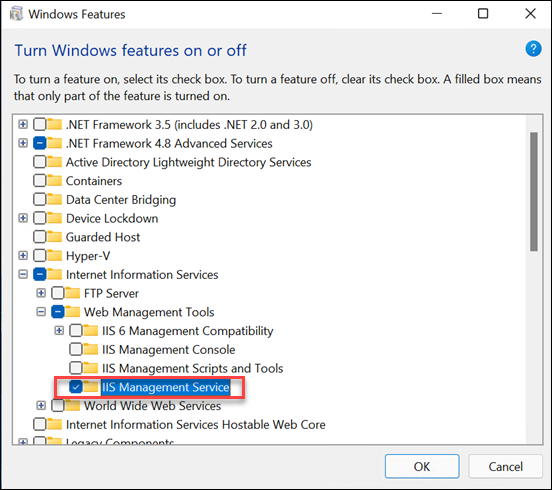
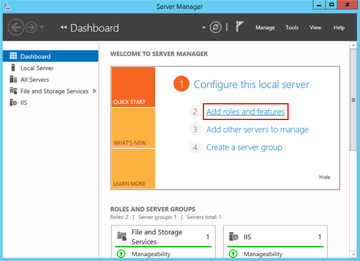
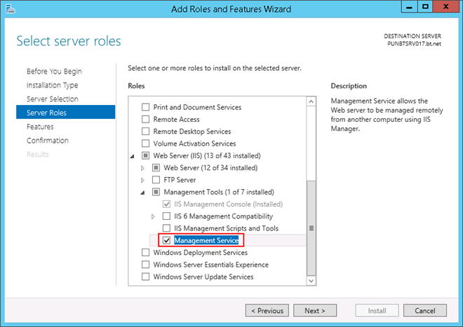
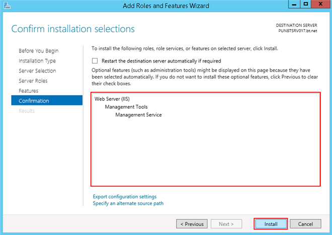

Download and Install Microsoft Web Deploy 3.6
To deploy the web application and website on IIS servers, you must install Microsoft Web Deploy 3.6 on both, the source machine (Desigo CC machine), as well as the target machine (third-party machine).

NOTE:
If you do not have Microsoft Web Deploy 3.6 installed on the source and target machines, you cannot export or import Web Applications. However if the export or import web applications still do not become available, see Enable the Import/Export Web Application
You must only download the Web Deploy x64 version and in the Setup type field, select Complete.
You can download Microsoft Web Deploy 3.6 from http://www.iis.net/downloads/microsoft/web-deploy.
For installing Web Deploy x64, please refer to How to perform a complete install at http://technet.microsoft.com/en-us/library/dd569059(v=ws.10).aspx.
Enable the Import/Export Web Application
To enable the Import/export Web application option in IIS for working with remote web application, you must first enable Management Service feature in IIS. Perform the following procedure to install the Management Service feature in IIS on different OS types.
Windows 11
- From Control Panel > Programs > Programs and Features, click Turn Windows feature on or off.
- Expand Internet Information Services and then Web Management Tools and select the feature IIS Management Service.

- Click OK.
- Verify that the Import/export Web application option is enabled in IIS.
- Restart the computer, if required.
Windows Server 2022
- Open the Windows Server Manager.
- On the Manage menu, click Add Roles and Features Wizard.

- The Add Roles and Features Wizard window displays.
- In the Server Selection > Server Roles, expand Web Server (IIS) and select Management Service under Management Tools.

- Click Next.
- Click Next.
- Click Install.

- The feature Management Service is installed.
- Verify that the Import/export Web application option is enabled in IIS.